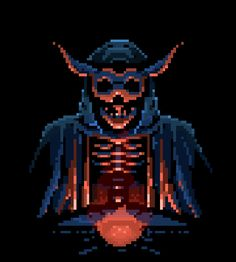

Mistérios da Mansão Esquecida

Você decide avançar pelo corredor escuro, ignorando a sensação de apreensão que se instala em sua mente. Você avança cautelosamente, cada passo ecoando nos corredores vazios. De repente, você ouve um ruído suspeito vindo de uma das portas laterais. Instintivamente, você se aproxima para investigar. No entanto, antes que você possa reagir, uma sombra escura emerge da escuridão e se lança sobre você. É tarde demais para reagir. Você percebe que caiu em uma armadilha mortal. O jogo termina com a sua morte prematura, deixando o mistério da mansão ainda sem solução.